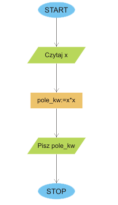
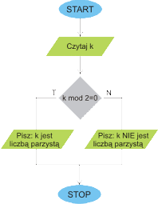
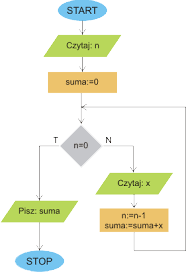
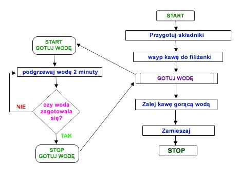
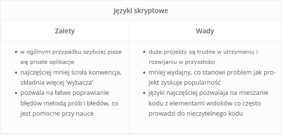
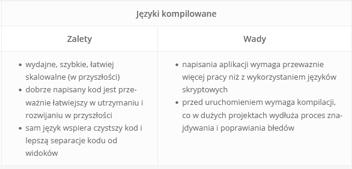

Adobe Dreamweaver
Adobre Dreamweaver to narzędzie (IDE) służące do tworzenia stron internetowych stworzone przez Macromedia, później kupione razem z firmą przez Adobe Inc.
Aktualnie obsługuje CSS,JavaScript oraz różne serwerowe języki i frameworki, takie jak ASP, ColdFusion, Scriptlet, czy PHP. Jak inne narzędzia deweloperskie pozwala na lokalne edytowanie plików i późniejsze ich przesyłanie protokołem FTP, SFTP lub podobnymi. Obsługuje również systemem SVN.
Rodzaje i przykłady algorytmów
Algorytm liniowy to algorytm mający prostą postać. Składa się z ciągu instrukcji, które są wykonywane jedna po drugiej w kolejności, jaka wynika z ich następstwa w zapisie algorytmu. Taki algorytm nosi również nazwę algorytmu sekwencyjnego

Algorytm rozgałęziony jest to algorytm który zawiera instrukcję warunkową. W algorytmie z warunkami może wystąpić kilka alternatywnych ciągów działań. Wybór jednego z nich następuje w zależności od spełnienia (lub niespełnienia) warunku.

Algorytmy iteracyjne - Iteracją nazywamy instrukcję powtarzania danego ciągu operacji. Liczba powtórzeń może być
ustalona przed wykonaniem instrukcji lub może zależeć od spełnienia pewnego warunku, który jest
sprawdzany w każdej iteracji. Iteracja inaczej zwana jest pętlą.

Algorytmy procedularne - Ten algorytm jest po prostu funkcją, która wykonuje dane zadanie z pomocą innych funkcji podrzędnych, które są tak na prawdę innymi algorytmami z zestawem danych przekazanych przez funkcję nadrzędną. Funkcja podrzędna zwraca funkcji nadrzędnej dane, dzięki którym funkcja może zostać wykonana. Tak na prawdę algorytmy rozgałęzione również są algorytmami proceduralnymi, ponieważ zapytania warunkowe to też funkcje.

Języki skryptowe i języki kompilowane
Pierwsza grupa to języki skryptowe. Programy napisane w ten sposób to właściwie pliki tekstowe (i tak, można je edytować nawet w notatniku), uruchamia się je za pomocą dodatkowego programu i w momencie uruchomienia tekst (kod) jest interpretowany (zamieniany na postać zrozumiałą dla komputera i wykonywany). Zaletą tego podejścia jest to, że możemy szybko zobaczyć efekty zmian (po zmianie wystarczy odświeżyć stronę czy uruchomić ponownie i od razu widzimy zmiany). Minusem jest, że błędy o błedach w kodzie (np. w składni) dowiemy się dopiero w momencie uruchamiania tego konkretnego fragmentu kodu (najczęściej), co utrudnia szukanie błędów.

Druga grupa to języki kompilowane, do tej grupy należy m.in. Java. Różnią się one tym, że zanim uruchomimy nasz kod, musimy go skompilować, tzn. przetłumaczyć na język zrozumiały dla komputera. W przypadku języków skryptowych proces ten odbywa się w momencie uruchamiania, za każdym razem jak program jest uruchamiany. W językach kompilowanych proces ten jest wykonywany tylko raz, jeszcze przed uruchomieniem programu. Powoduje to, że wprowadzone przez nas zmiany musimy najpierw skompilować (najczęściej z całym programem) a następnie uruchomić program jeszcze raz. Wymaga to trochę innego podejścia do pisania programów (metoda prób i błedów do rozwiązania problemów nie sprawdzi się w większych projektach). Z drugiej strony programy napisane z użyciem języków kompilowanych działają szybciej, a błędy w składni są wykrywane jeszcze przed uruchomieniem programu (na etapie kompilacji). Znajomość języków z tej grupy daje też większe możliwości na rynku pracy, ponieważ większość ofert z dużych firm dotyczy właśnie tej grupy.

Języki skryptowe:
- PHP
- Python/ Django
- Ruby on Rails
- Node.JS
Języki kompilowane:
- Java
- C#(.NET)
- Pascal
- C
Kompilator,linker i debuger
Kompilator - to program, który czyta kod napisany w jednym języku (języku źródłowym) i tłumaczy go na równoważny kod w innym języku (języku wynikowym) z jednoczesnym wykrywaniem ewentualnych błędów popełnionych w trakcie programowania.
Interpreter - to program tłumaczący,którego celem nie jest przekształcanie programu źródłowego w wynikowy,lecz natychmiastowe wykonanie instrukcji,lub ich niewielkiej sekwencji po przetłumaczeniu na sekwencję rozkazów maszynowych.
Konsolidator lub program konsolidujący, pop. „linker” – jeden z programów składowych kompilatora. Konsolidator w trakcie procesu konsolidacji łączy zadane pliki obiektowe i biblioteki statyczne tworząc w ten sposób plik wykonywalny. W systemach uniksowych jest to zazwyczaj program o nazwie ld.
Debugger – program komputerowy służący do dynamicznej analizy innych programów, w celu odnalezienia i identyfikacji zawartych w nich błędów, zwanych z angielskiego bugami. Proces nadzorowania wykonania programu za pomocą debuggera określa się mianem debugowania.
Zegar
Co sekundę program nadpisuje zmienną jako nowy obiekt Date. Z niej pobiera aktualną godzinę,minutę i skeundę, a aby format zawsze zgadzał się z hh:mm:ss, w razie konieczności dodaje zera. To zaś wyświetla we wcześniej zdefiniowannym znaczniku p.
Licznik wejść
Jest napisany w JavaScript więc wykorzystuje ciasteczka do przechowywania danych na komputerze użytkownika. Ogranicza to jego działanie tylko dla pokazania, ile razy odwiedziło się stronę.